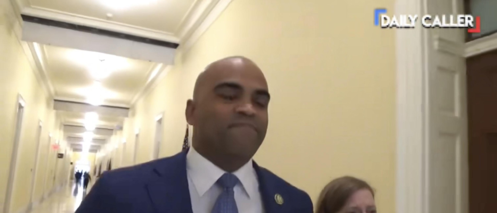

EXCLUSIVE: Dem Congressman Threatens To Call Cops On Citizen Journalist Rather Than Answer Questions On HamasDemocratic Texas Rep. Colin Allred threatened to call the Capitol Police on a citizen journalist rather than answer a question about reports he had backed the release of millions of dollars that potentially funded the terrorist organization Hamas, according to a video obtained exclusively by the Daily Caller. “Congressman Allred, do you regret calling for the release of millions of dollars to Hamas?” the citizen journalist asked multiple times. “I’ll get the Capitol Police for you,” Allred responded while a female walking with the congressman told the journalist he could not record in the building. “You’re on federal property, stop doing this,” Allred added. For electronic media coverage, the House states “[v]ideotaping and audio recording are permitted in the public areas of the House and Senate office buildings.” The video was taken outside of the Canon House Building, the Daily Caller learned. Allred co-signed a letter in June 2021 that urged the Biden administration to release millions of dollars in funds to the West Bank, which is controlled by the Palestinian Authority, as well as to Gaza, where Hamas gained control in 2007, according to The Dallas Morning News. The letter did not specifically call for funds to go directly to Hamas. (RELATED: Rep. Colin Allred To Attend Campaign Fundraiser Hosted By Group With Radical, Anti-Israel Record) The letter wrote that the aid would go to the West Bank where it would be “administered and overseen by our government and by trusted and vetted partners on the ground. Secretary Antony Blinken has made clear that Hamas and other terrorist groups will not benefit from our humanitarian assistance,” The Dallas Morning News reported. Allred is currently running for Senate against Republican state Sen. Ted Cruz. Cruz argued earlier in October, following Hamas’ terrorist attack on Israel, that the safeguards the United States has put in place to assure aid doesn’t reach Hamas are not effective enough, the outlet reported. In March 2021, the head of the Office of Foreign Assets Control at the Treasury Department warned the director of the Office of Threat Finance Countermeasures at the State Department that aid to Gaza could end up in the hands of Hamas, according to the Washington Free Beacon. “Why are you standing with Hamas over Israel?” the citizen journalist can be heard asking in the video. “Why are you supporting Biden’s open border policies?” “We will get the Capitol Police for you,” Allred responded. Allred’s office did not immediately respond to the Daily Caller’s request for comment. |
 |